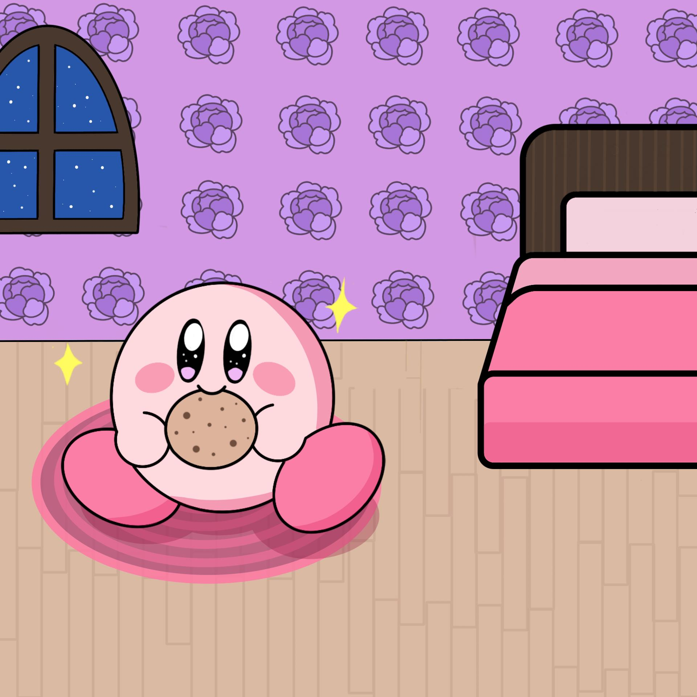

Ilustración Kirby
Kirby es un personaje icónico para esta página, si deseas dibujarlo con un fondo personalizado tendrá el valor de $7500 pesos chilenos que incluye 4 correcciones en el proceso, si se desea un Kirby con un fondo de color simple, el costo es de $5000 pesos chilenos + 4 correcciones en el proceso. Por cada corrección extra fuera del acuerdo son $1.000 pesos extra.
